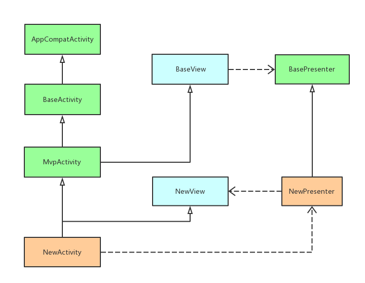

我的一个简单的基础库、架构
一个新项目每次都要处理一些新的基础库，整理一下我使用的方式。
使用到的第三方库
参见这条配置文件build.gradle， 没什么好讲的
两个帮助开发调试的工具
在 CoreApplication.kt中初始化了两个帮助开发调试的工具类和一个Toast工具类
debugInstall(this) |
timber
使用logcat输出日志时，自动在logcat中添加可点击跳转的代码行号


stetho
使用stetho查看网络数据等
网络请求
对retrofit简单做了一个初始化及封装，参见Http.kt
为
OkHttpClient添加了一个OkHttp的日志拦截器为
GsonConverter设置了一个 对Double、Float、Int解析进行了处理的Gson对象。如果不能解析为基本数据类型则转换为默认值,而不是抛出异常
对
RxJava2CallAdapter设置了默认调度器为Schedulers.io()对构建
Service进行了稍微封装，代码如下inline fun <reified T> createApi(): T {
return retrofit.create(T::class.java)
}
//调用时,不再是传入目标的.class对象
var service = createApi<Service>()
架构简单介绍
传统的MVP架构会对View和Presenter都向上抽取接口。
而本项目中Presenter没有向上抽取接口，有两个原因，一是普通项目中Presenter抽取接口意义不大。二是为了方便的释放RxJava资源，需要抽取一个抽象类。如果抽取接口，在编写新模块的时候既要继承抽象类又要实现接口，感觉比较丑陋。
主要还是觉得普通项目中国呢Presenter抽取接口的意义不是特别大。
abstract class BasePresenter { |
BaseView.kt中只是简单规定了持有一个BasePresenter.kt的子类
interface BaseView<out P : BasePresenter> { |
而在BaseActivity.kt中的onCreate方法中依次调用了4个方法。
override fun onCreate(savedInstanceState: Bundle?) { |
同时为了方便扩展，在这4个方法前后分别添加了额外的两个空实现的方法，以便子类在合适的时机更方便根据需求进行自定义。
同时MvpActivity继承了这个BaseActivity 并且分别在onCreate和onDestroy呼叫了Presenter层对应的subscribe()和unsubscribe()
abstract class MvpActivity<out P : BasePresenter> : BaseActivity(), BaseView<P> { |
使用
编写新的界面时
- View层
- 创建对应的View层接口，声明各种方法
- 创建新的Activity 继承 MvpActivity，实现对应的接口，并且使用泛型声明指定的Presenter
- 实现MvpActivity接口中对应方法，根据需求选择实现方法
- Presenter层
- 创建新的
Presenter继承自BasePresneter - 在类中创建合适的方法实现逻辑
- 创建新的
- 网络请求
- 创建对应的Service接口，及对应的接口返回实体
- 参考retrofit使用

TODO
- 现在只对Activity进行了部分封装，应该对Fragment也进行封装
- Activity和Fragment交互时的一些操作的封装